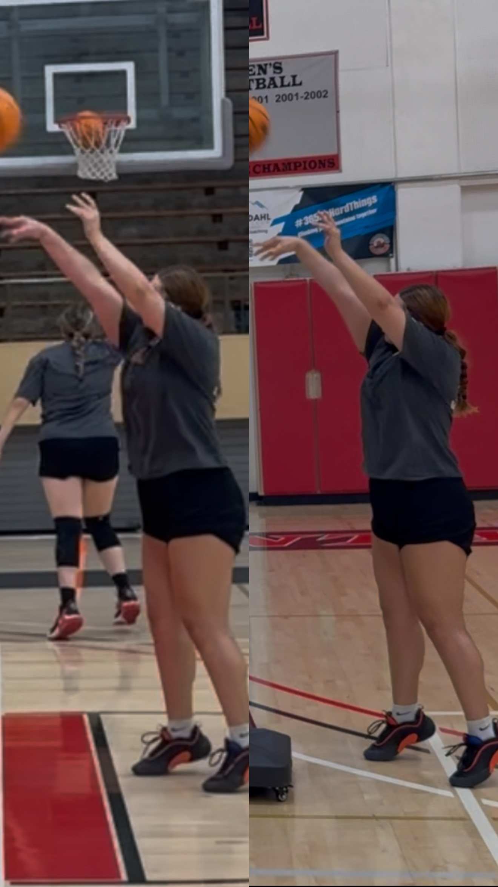
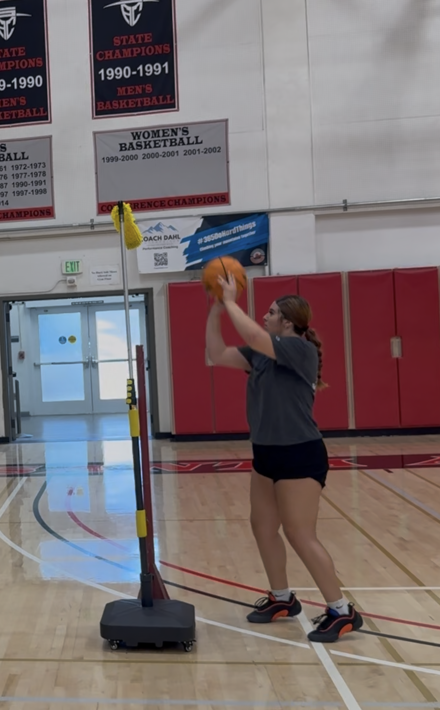

Raise the Arc
Players train the ball to clear the guide, building a higher trajectory and softer entry angle.
INNOVATION
The Archer is a basketball training tool designed to raise shooting arc, sharpen touch, and create repeatable mechanics through visible feedback. Built from years of player development work, it gives athletes a clear target for improving shot trajectory, finishing touch, and daily skill accountability.
TRAINING TOOL
The Archer gives players a visible target for better shot trajectory. The adjustable guide turns arc and touch into something athletes can see, feel, and repeat.

HOW IT WORKS
Players train the ball to clear the guide, building a higher trajectory and softer entry angle.
The tool makes misses and flat reps visible, so correction happens during the workout.
Release habits are tied to one clear standard the player can reproduce.
The same standard supports shooting, finishing, post work, and daily accountability.
VISUAL GALLERY





PORTFOLIO VALUE
The Archer reflects Coach Fogarty's larger development model: turn a teaching problem into a simple, staff-ready tool athletes can use every day.
Flat trajectory, inconsistent touch, and unclear release feedback.
An adjustable guide gives coaches a shared standard for correction.
The tool fits shooting workouts, post development, and staff-led skill work.
NEXT STEP
Review the player development systems, product overview, and visual proof connected to Coach Fogarty's innovation work.